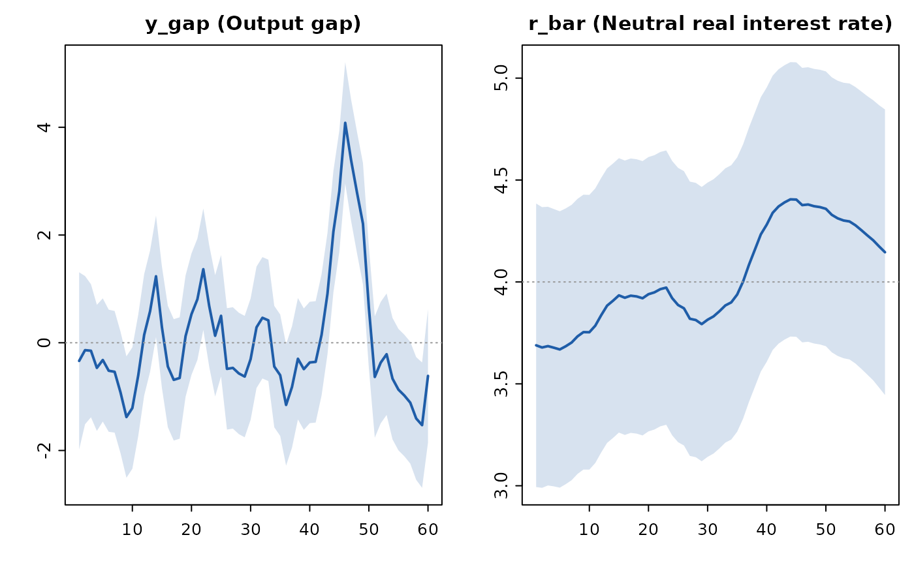

Runs the Kalman filter and RTS smoother over the solved model, jointly inferring every latent variable — output gap, neutral rate, equilibrium exchange rate, trend processes — and the historical structural shocks from whatever subset of variables you actually observe. Missing values (ragged edges, gappy series) are handled naturally.
Arguments
- x
A
qpm_model(solved internally) orqpm_solution.- data
A data frame in levels (model units). Columns whose names match declared variables are used as observables; an optional
periodcolumn provides labels.NAs are allowed anywhere.- observables
Optional character vector restricting which columns are treated as observed.
- measurement_error
Measurement-error standard deviation(s): scalar or named vector over observables. Defaults to 0.
- kappa
Diffuse-prior variance scale used when the model has unit-root (random-walk) trends; see
state_space().
Value
An object of class qpm_filtration: smoothed states in levels
($states), their standard errors ($se), smoothed structural
shocks ($shocks), the log-likelihood ($loglik), innovation
diagnostics ($diag), and the full expanded-state matrix
($states_dev). Feed it to qpm_decompose() for historical shock
decompositions or to qpm_forecast() to forecast from the smoothed
current state.
Details
The filter is initialized at the model's stationary distribution (Lyapunov covariance), which is exact for the stationary models qpmR currently supports.
Examples
sol <- qpm_solve(qpm_template("bkl"))
obs <- simulate(sol, nsim = 60, seed = 3, burn = 20)
fit <- qpm_filter(sol, obs[, c("period", "pi", "i", "q")])
fit
#> <qpm_filtration> Canonical small open economy QPM (BKL, stationary trends)
#> periods 1-60 (60) - observables: pi, i, q - missing: 0 of 180
#> log-likelihood: -293.64
#> innovation diagnostics: Ljung-Box min p = 0.66 (i)
#> outliers (|std innov| > 3): 1; largest: period 46 i (+3.1 sd)
#> latent states estimated: y_gap, pi4, r, r_gap, q_gap, q_bar, r_bar, dy_obs, ...
plot(fit, vars = c("y_gap", "r_bar"))
